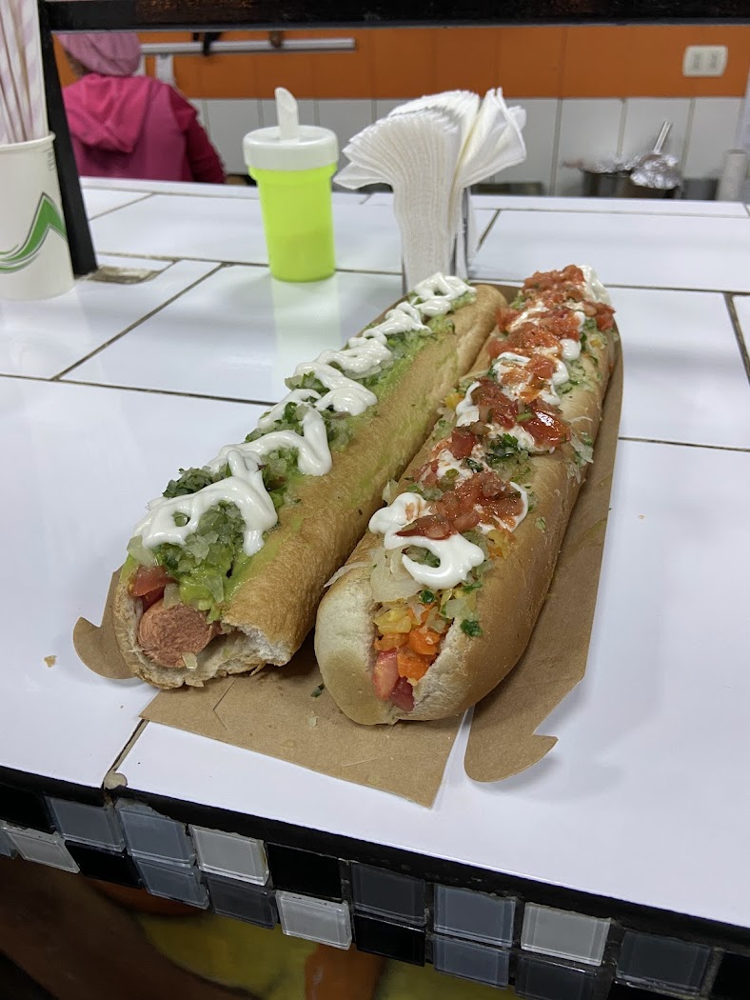
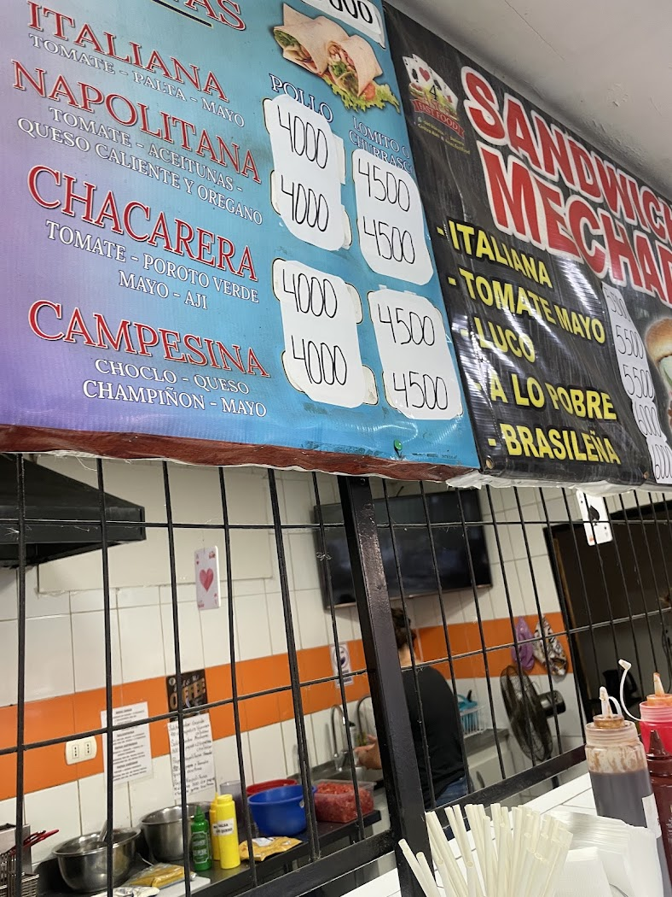
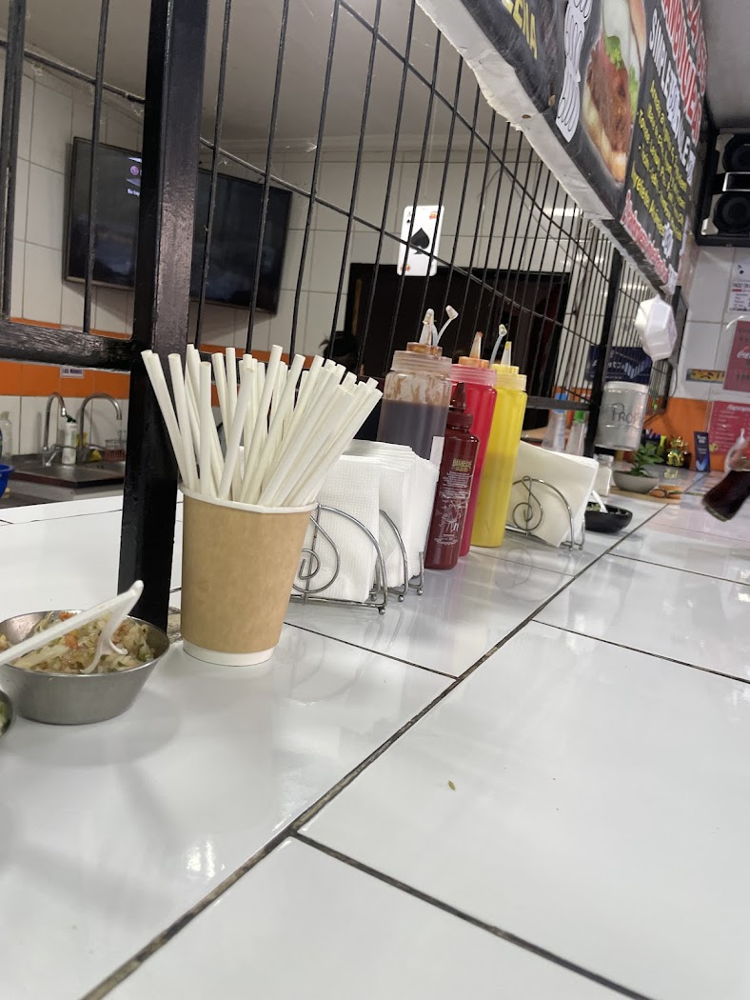

Completos grandes
"La estrella del local es el completo: completos grandes sí po" — cita textual de una reseña real.

Comida rápida · Tres Poniente con Los Aperos · Maipú
Completos, lomitos, churrascos y sándwiches de mechada en Tres Poniente con Los Aperos. Con mayo casera y todos los condimentos que quieras, gratis.
Italiana, napolitana, chacarera y campesina — en completo, o en lomito o churrasco.
"La estrella del local es el completo: completos grandes sí po" — cita textual de una reseña real.
"La mayo casera es buena… tienen hartos condimentos para agregar gratis" — de la misma reseña. Y otra suma: el pan es sabroso.
"Un sitio para comer rapidito y cumple con llenar la guata", dice una reseña. Consumo en el lugar y para llevar.
4 Ases es comida rápida en la esquina de Tres Poniente con Los Aperos, Maipú: completos, lomitos, churrascos y sándwiches de mechada, para comer ahí o para llevar.
Con 4.3 estrellas y 14 opiniones, sus tres palabras más repetidas son sabor, pan y condimentos. Su cartel es claro: cuatro variedades —italiana, napolitana, chacarera y campesina— y cinco estilos de mechada.


Los precios de los lomitos y churrascos son los que muestra su propio cartel. Arma tu pedido y consúltanos el resto.
"Buen sabor, la mayo casera es buena. Tienen hartos condimentos para agregar gratis. La estrella del local es el completo: completos grandes sí po."
"Este local cumple su función: es un sitio para comer rapidito, comida en horarios pauperrimos, y cumple con llenar la guata."